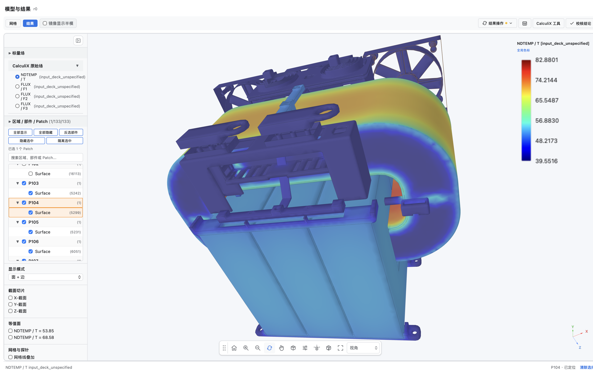

25 kW 中频中压变压器整机稳态热分析
案例参考苏黎世联邦理工学院（ETH Zurich）的 25 kW、约 50 kHz 中频中压变压器样机。该原型用于固态变压器实验验证，案例关注中频隔离变压器的整机温度分布。

整机模型
模型包含 133 个部件，涵盖磁芯、58 个线束匝、骨架、灌封、端子、外壳和六台风扇。网格约有 79 万个节点和 536 万个四面体单元。
工况与复核
在环境温度 40 °C、绕组发热 45 W、磁芯发热 41 W 的工况下，使用 CalculiX 2.21 求解整机稳态温度场，并通过热量守恒复核。